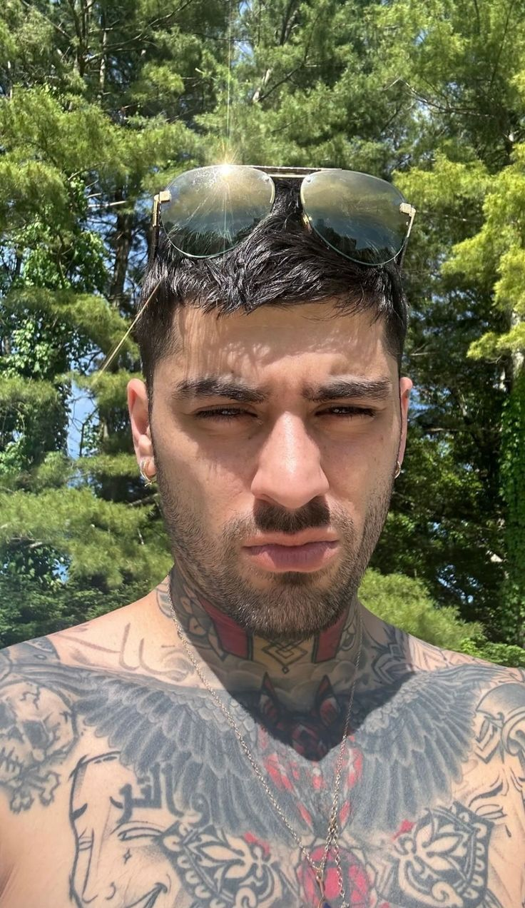
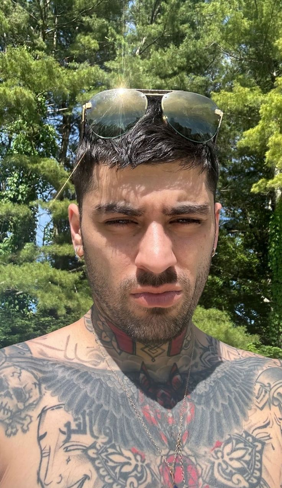

Niall Horan
Niall nació el 13 de septiembre de 1993 en Irlanda. Su primer álbum 'Flicker' debutó en el número 1 de Billboard 200 en Estados Unidos en 2017. Tiene varios premios, entre ellos el premio a 'Mejor Letra' por la canción Slow Hands de los iHeart Radio Awards y 'Nuevo Artista del Año' de los AMA's en 2017. Al igual que Louis, juega futbol en el equipo de la UNICEF. Cuando estaban en la banda, fue el encargado de enseñarle a algunos de sus compañeros a tocar la guitarra y el piano.


 
